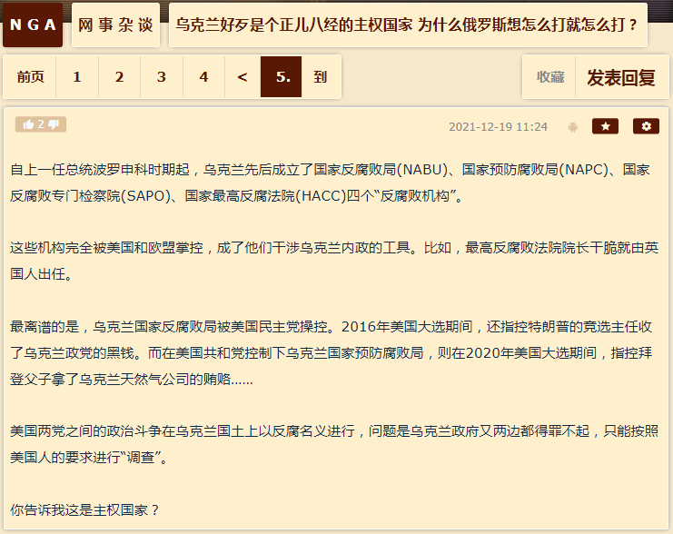
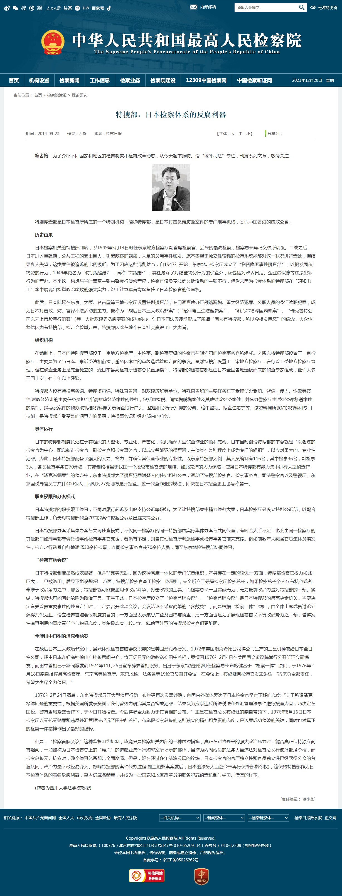
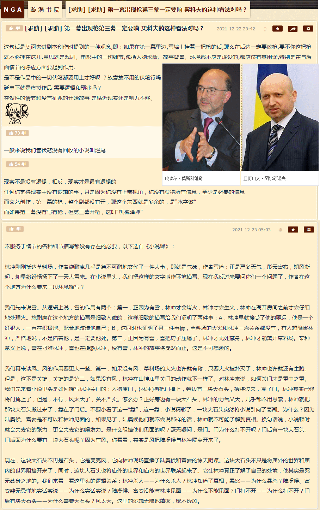
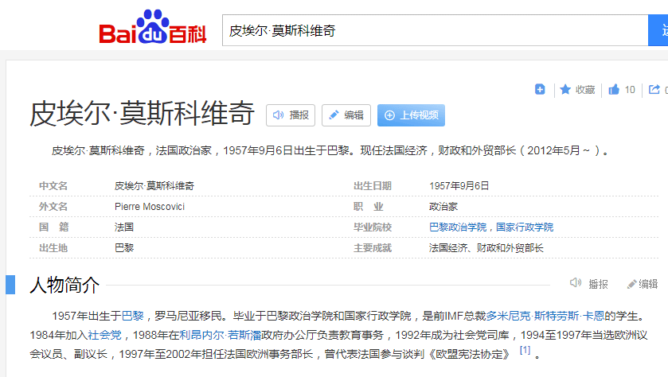
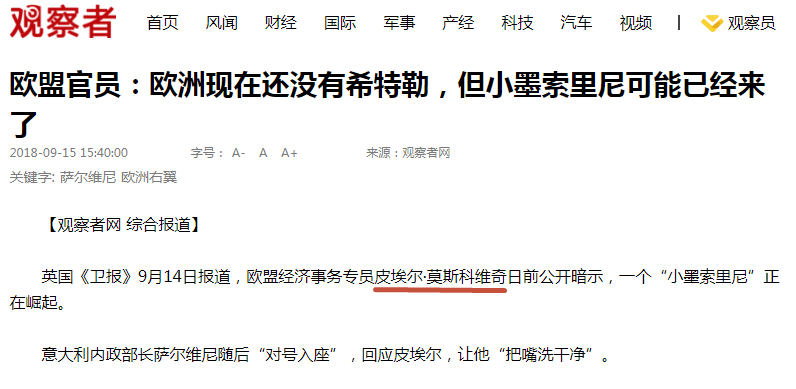
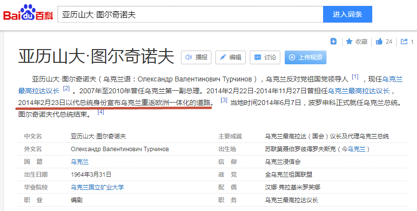

fanhan-inside
长话短说，备份未经权威机构认证和经由权威机构认证的情报：


然后脑洞自然而然就涌现出来了也，无一字无来历，见标题。
至于其它线索，比方说美帝灯塔国两党分别控制「完成时」「进行时」两个反腐败局所处理的孤立、突发、偶然、片面的不和谐因素，曾经在情报工学业内称之为「金日成型事件」与「金正日型事件」，适用场合完全不同。
也就是说，擅长发动「先发制人の军事打击」的共和党按照「防患于未然」的一贯思路「疑罪从有」「把一切不稳定因素扼杀在萌芽当中」，而参与两次世界大战并且都笑到最后的民主党则按照「郑伯克段于鄢」传统艺能「养寇自重」并高瞻远瞩算无遗策运筹帷幄决胜千里到处搭建「摄影棚」并安插大批「剧务」确保一切尽在掌握中。
确实符合迄今为止通过搜集的情报所得出的结论，也符合十步一岗五步一哨夜不闭户路不拾遗兲子脚下首善之区国际一流和谐宜居之都四十余年来亲身经历的各种体验。
fanhan-inside
补充情报兼素材：




简单说，幽州外景片场摄影棚当中的名角大腕以及配套的群众演员，打嗝放屁都体现了阴谋诡计，念诵的台词当中标点符号都有微言大义，相信基辅外景片场摄影棚也是一样。
就按照罗刹特色文艺理论字面含义解读，如果把2014年克里米亚独立并加入罗刹作为「第一幕」，当时台上出现了「莫斯科维奇」「土耳其懦夫」两个道具，到「第三幕」一定会派上用场。
参考这俩道具的尊容，正好能与脑壳里只有红白两色液体的肌肉棒子在引用《水浒传》《金瓶梅》歌颂从足协主席到军委主席的高第良将家衙内的同时对于中华民国常凯申大统领以「光头」字眼冷嘲热讽的精湛表演对上号。
远在「搭建舞台」的时候，苏修特色大手情报机构外围组织「基辅迪纳摩」就已经是「背景板」了，根红苗正忠君爱国的童年才俊炒作当时「罗刹战神」斯特列科夫自带干粮进军基辅并以国际长途电话通知普京大统领派人接收，就是已经发动了伪装成「球迷」的克格勃卧底。
而当时的「国际米兰」，作为「英特纳雄耐尔就一定要实现」的一面旗帜，伪装成其「球迷」的间谍特务卧底敌后武工队员们，都干了些什么呢？